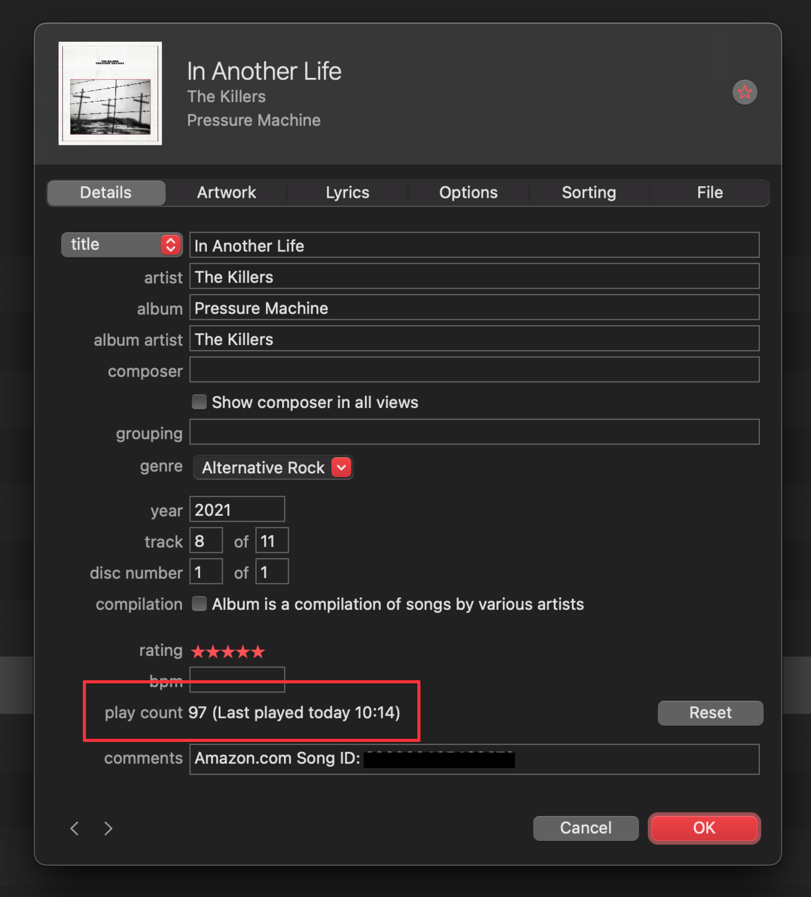
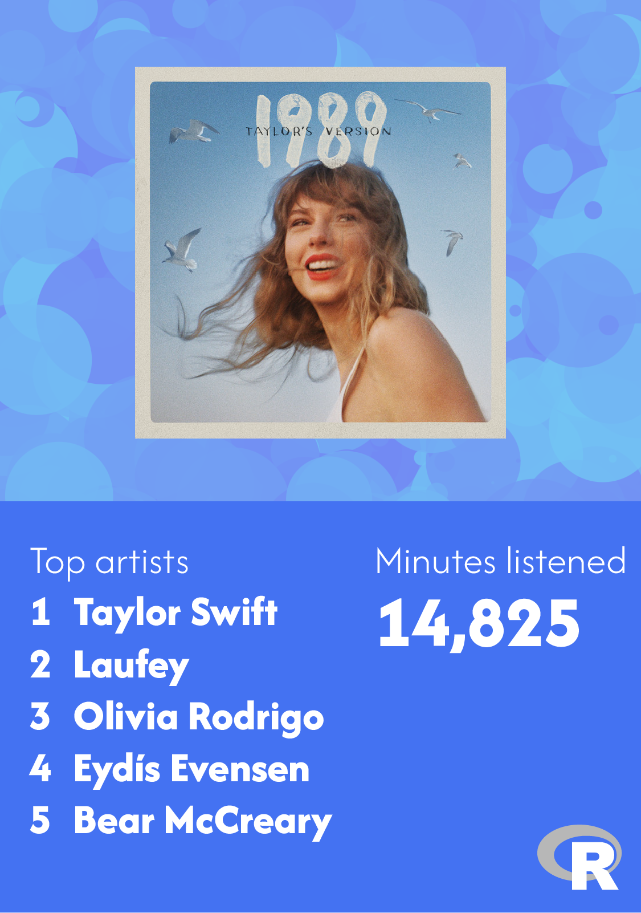
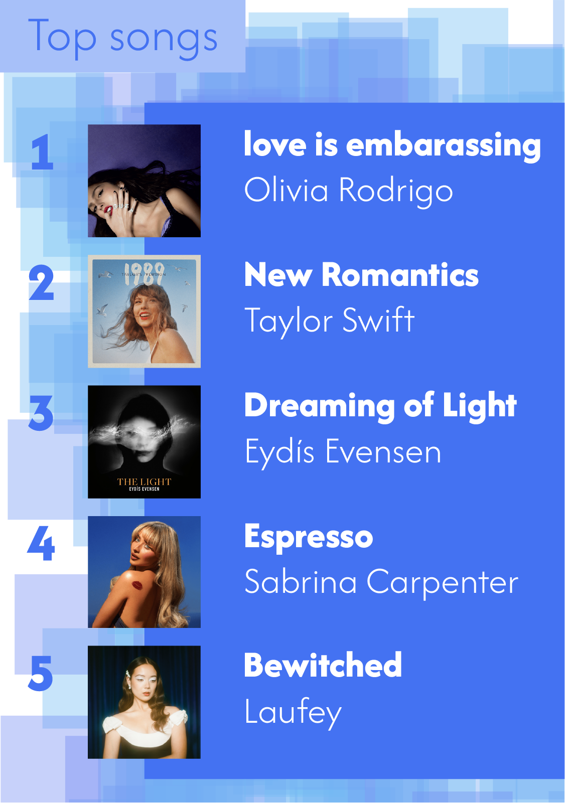

’Tis the season for Spotify Wrapped stats and I love it, both for seeing what everyone listens to and because it’s such a cool way of presenting data. A few years ago on Twitter, CaitlinHudon noted that
Spotify Wrapped is a great example of how you can build a fantastic data product without maching learning or AI. (@beeonaposy)
At its core, Spotify Wrapped is really just some grouped and summarized data—a PivotTable with some album cover art slapped on. And it’s fun and neat and everyone loves it!
Because I’m an Elder Millennial and started listening to music in the days of Napster, I prefer to control my music files rather than stream it Spotify-style, so I get all my stuff from either the Amazon Music store or Bandcamp since they both provide DRM-free MP3s. I listen to everything in the used-to-be-iTunes Music app (not to be confused with Apple’s music streaming service, Apple Music), and I use iTunes Match to access my library across all my devices.1
1 I also have it all backed up to a Plex server on a Synology NAS in my house, and my kids listen to music on it through the Plexamp app, but I don’t because I still prefer using the iTunes/Apple Music desktop app 🤷♂️.
iTunes/Music keeps track of some song metadata, like a count of the number of times a song has been played:

All that metadata is stored in a big ol’ gross XML file. In days of iTunes, you could find it at ~/Music/iTunes/iTunes Library.xml; with Apple Music, it’s hidden in ~/Music/Music/Music Library/Library.musicdb. The easiest way to access it is to export a copy of it from Music with File > Library > Export Library…. It has a bunch of neat details about each file in your library:
<key>Play Count</key><integer>97</integer> <key>Play Date</key><integer>3815892895</integer> <key>Play Date UTC</key><date>2024-12-01T15:14:55Z</date>
…but unfortunately for Spotify Wrapped purposes, it overwrites the count and date information when you listen to a track—it doesn’t keep track of individual play counts. Here’s what the XML for “In Another Life” looked like before I listened to the track while writing this post:
<key>Play Count</key><integer>96</integer><key>Play Date</key><integer>3808562446</integer><key>Play Date UTC</key><date>2024-09-07T18:00:46Z</date>
That September 7th listen was erased from history once I hit play in December :(
That means it’s impossible to figure out how many times you listen to a track during a given time period—the play count only shows the most recent listen. With one XML export, you can’t find Spotify Wrapped-like details about listening habits in a single year.
However, if you have two XML exports, you can!
Calculating 2024 play counts with R
I played the long game this year and exported a copy of my iTunes/Music library on the morning of January 1 and stored the XML file in a folder on my computer. I then exported a copy of the library as it stands today. With these two library files, I can subtract the play count from January 1 from the play count today and find how many times I listened to each track. It still doesn’t give me date information—there’s no way to see time trends like what I was listening to in March or whatever2—but it gives me good data to work with.
2 If I were super on top of things and cared that much, I could set up a script to automatically export a copy of the library every day and then reverse engineer daily listening data, but that seems like an excessive amount of work.
In the spirit of Caitlin’s tweet, I’m going to keep the analysis of this data as simple and straightforward as possible—just filtering, grouping, and summarizing.
The only bit of fancy R work comes at the beginning with parsing and cleaning the Apple Music XML files. The track information is deeply nested inside a bunch of XML layers and untangling all that requires some data wrangling. Fortunatley Simon Couch already did it in his 2022 analysis of his music, and he even made an accompanying package {wrapped} for doing it yourself. His package is designed to extract the play counts of all the music added in a given year, while I want the counts for all years, so I modified his wrap_library() function slightly to ignore the year argument and just parse everything. The modified function, now read_itunes_library() is below, for the morbidly curious:
library(tidyverse)# Copy this function from the text earlier read_itunes_library<-function(...){...}music_january<-read_itunes_library("Library_2024-01-01.xml")music_december<-read_itunes_library("Library_2024-12-04.xml")
3 My most recent Bandcamp purchases were the two Minecraft soundtracks (Volume Alpha and Volume Beta) for my Minecraft-obsessed kids, hence those tracks in the glimpse() output there.
There are columns for iTunes/Music’s internal track ID, a bunch of track metadata like title, artist, album, genre, and date added, and columns for the skip count and play count. Those are all columns Simon decided to include with his {wrapper} package—if you modify the read_itunes_library() function from earlier, you can keep any of the metadata that Music keeps track of.
With library data from both January and December loaded, I next combine them into one dataset with the total number of plays in 2024. This requires a tiny bit of data wrangling: I rename the play count column in the December data, join the January data to it, rename the January play count column, recode missing play counts as 0, and find the difference between play counts in December and January:
music_2024<-music_december|># Rename the column of December play countsrename(play_count_end =play_count)|># Merge in the play count column from the January 1 dataleft_join(music_january|>select(id, play_count_start =play_count), by =join_by(id))|># Tracks that were added in 2024 don't show up in music_january, so they appear # in the merged data as NA. This recodes them as 0, which makes it so I can # do math with them in the next stepreplace_na(list(play_count_start =0, play_count_end =0))|># Calculate the difference between December and January play countsmutate(play_count_2024 =play_count_end-play_count_start)
Let’s see what the merged data looks like really quick:
That new play_count_2024 column is the main thing I’m interested in—I can summarize it a bunch of different ways.
Minutes listened
There’s a column for total_time that’s measured in milliseconds. I can multiply it by the play count and do some division to figure out a rough count of the total number of minutes listened. It’s not 100% accurate since it doesn’t account for partial listens, but it’s close enough.
added_2024<-music_2024|>mutate(year_added =year(date_added))|>filter(year_added==2024)|>distinct(album_artist, album, date_added)added_2024|>arrange(date_added)|>print(n =Inf)## # A tibble: 30 × 3## album_artist album date_added## <chr> <chr> <date> ## 1 boygenius the record [Explicit] 2024-02-05## 2 Olivia Rodrigo GUTS (spilled) [Explicit] 2024-03-23## 3 The Avett Brothers The Avett Brothers 2024-03-23## 4 The Decemberists As It Ever Was, So It Will Be Again 2024-03-23## 5 Lauren Mayberry Change Shapes 2024-03-23## 6 Lauren Mayberry Shame 2024-03-23## 7 Nils Frahm Day 2024-04-09## 8 Taylor Swift THE TORTURED POETS DEPARTMENT: THE ANTHOLOGY [Explicit] 2024-04-19## 9 Taylor Swift THE TORTURED POETS DEPARTMENT [Explicit] 2024-04-19## 10 The Avett Brothers The Avett Brothers 2024-05-17## 11 Lindsey Stirling Duality 2024-06-18## 12 The Decemberists As It Ever Was, So It Will Be Again 2024-06-18## 13 Bits & Hits Lord of The Rings but it's lofi beats 2024-07-28## 14 Bits & Hits Zelda but it's lofi beats 2024-07-28## 15 Bits & Hits Minecraft but it's lofi beats 2024-07-28## 16 Sabrina Carpenter Short n' Sweet [Explicit] 2024-08-05## 17 Chappell Roan The Rise and Fall of a Midwest Princess [Explicit] 2024-08-13## 18 Sabrina Carpenter Short n' Sweet [Explicit] 2024-08-23## 19 Eydís Evensen The Light 2024-09-25## 20 Bear McCreary The Lord of the Rings: The Rings of Power (Season 2: Amazon Original Series Soundtrack) 2024-10-07## 21 Dua Lipa Radical Optimism [Explicit] 2024-10-27## 22 Laufey Bewitched: The Goddess Edition [Explicit] 2024-11-05## 23 Laufey Everything I Know About Love 2024-11-05## 24 Laufey Typical of Me EP 2024-11-05## 25 Laufey Bewitched 2024-11-05## 26 Anna Lapwood Images 2024-11-11## 27 Anna Lapwood Luna 2024-11-11## 28 Chappell Roan Good Luck, Babe! 2024-11-11## 29 C418 Minecraft - Volume Alpha 2024-11-29## 30 C418 Minecraft - Volume Beta 2024-11-29
Top songs
And here are the top songs:
top_played<-music_2024|>select(track_title, artist, play_count_2024)|>arrange(desc(play_count_2024))top_played## # A tibble: 11,691 × 3## track_title artist play_count_2024## <chr> <chr> <dbl>## 1 love is embarrassing [Explicit] Olivia Rodrigo 42## 2 New Romantics (Taylor's Version) Taylor Swift 35## 3 Dreaming of Light Eydís Evensen 33## 4 Espresso [Explicit] Sabrina Carpenter 32## 5 Bewitched Laufey 31## 6 Please Please Please [Explicit] Sabrina Carpenter 30## 7 Anna's Theme Eydís Evensen 26## 8 All You Had To Do Was Stay (Taylor's Version) Taylor Swift 26## 9 Shake It Off (Taylor's Version) Taylor Swift 26## 10 The Light II Eydís Evensen;Schola Cantorum Reykjavicensis 23## # ℹ 11,681 more rows
Top artists
And the top artists:
top_artists<-music_2024|>group_by(artist)|>summarize(play_count =sum(play_count_2024))|>arrange(desc(play_count))top_artists## # A tibble: 1,851 × 2## artist play_count## <chr> <dbl>## 1 Taylor Swift 484## 2 Laufey 384## 3 Olivia Rodrigo 281## 4 Eydís Evensen 249## 5 Bear McCreary 234## 6 The Decemberists 214## 7 Hans Zimmer 188## 8 Sabrina Carpenter 151## 9 The Avett Brothers 149## 10 Nicholas Britell 148## # ℹ 1,841 more rows
Top albums
And the top albums. This is a little trickier since Music doesn’t keep track of full album listens (and I don’t think Spotify does that either), so it’s a count of the number of tracks played in the album. That means the count is biased towards longer albums like 1989 (21 tracks) or the Rings of Power soundtrack (40 tracks). But it’s still a helpful overview:
top_albums<-music_2024|>group_by(album, artist)|>summarize(count_of_tracks_played_in_album =sum(play_count_2024))|>arrange(desc(count_of_tracks_played_in_album))top_albums## # A tibble: 2,434 × 3## # Groups: album [992]## album artist count_of_tracks_played_in_album## <chr> <chr> <dbl>## 1 1989 (Taylor's Version) Taylor Swift 399## 2 GUTS (spilled) [Explicit] Olivia Rodrigo 336## 3 Bewitched: The Goddess Edition [Explicit] Laufey 244## 4 The Light Eydís Evensen 216## 5 Short n' Sweet [Explicit] Sabrina Carpenter 151## 6 The Lord of the Rings: The Rings of Power (Season One: Amazon Original Series Soundtrack) Bear McCreary 131## 7 Interstellar: Original Motion Picture Soundtrack (Deluxe Version) Hans Zimmer 108## 8 The Lord of the Rings: The Rings of Power (Season 2: Amazon Original Series Soundtrack) Bear McCreary 103## 9 The Avett Brothers The Avett Brothers 93## 10 8th Wonder The National Parks 84## # ℹ 2,424 more rows
Final images
This is all ugly console output, so finally, I whipped up a couple Wrapped-esque images in Illustrator with the statistics;

Top artists and total mintues

Top songs
Citation
BibTeX citation:
@online{heiss2024,
author = {Heiss, Andrew},
title = {Apple {Music} {Wrapped} with {R}},
date = {2024-12-04},
url = {https://www.andrewheiss.com/blog/2024/12/04/apple-music-wrapped-r/},
doi = {10.59350/64kxj-xp130},
langid = {en}
}
---title: "Apple Music Wrapped with R"date: 2024-12-04description: "Use R to parse Apple Music XML files and create your own Spotify Wrapped-like stats"image: "img/social-image.png"twitter-card: image: "img/social-image.png"open-graph: image: "img/social-image.png"categories: - r - tidyverse - musicdoi: 10.59350/64kxj-xp130citation: trueshift-heading-level-by: 1---```{r}#| label: setup#| include: falseknitr::opts_chunk$set(fig.width =6,fig.height =6*0.618,fig.retina =3,dev ="ragg_png",fig.align ="center",collapse =TRUE,out.width ="95%",warning =FALSE,cache.extra =1234# Change number to invalidate cache)options(digits =4,width =300)```'Tis the season for Spotify Wrapped stats and I love it, both for seeing what everyone listens to and because it's such a cool way of presenting data. A few years ago on Twitter, [Caitlin](https://bsky.app/profile/beeonaposy.bsky.social)[Hudon](https://www.caitlinhudon.com/) noted that > Spotify Wrapped is a great example of how you can build a fantastic data product without maching learning or AI. ([\@beeonaposy](https://x.com/beeonaposy/status/1334203860345208832?lang=en)){width="70%" fig-align="center"}At its core, Spotify Wrapped is really just some grouped and summarized data—a [PivotTable](https://en.wikipedia.org/wiki/Pivot_table) with some album cover art slapped on. And it's fun and neat and everyone loves it!I've always been jealous of everyone's annual Spotify Wrapped reports, but since I don't use Spotify, [I've never gotten to see my own details](https://bsky.app/profile/andrew.heiss.phd/post/3kfe3pe32jm2g).{width="80%" fig-align="center"}Because I'm an Elder Millennial and started listening to music in the days of Napster, I prefer to control my music files rather than stream it Spotify-style, so I get all my stuff from either the Amazon Music store or [Bandcamp](https://bandcamp.com/) since they both provide DRM-free MP3s. I listen to everything in the used-to-be-iTunes Music app (not to be confused with Apple's music streaming service, Apple Music), and I use [iTunes Match](https://support.apple.com/en-us/108935) to access my library across all my devices.^[I also have it all backed up to a [Plex](https://www.plex.tv/) server on a [Synology NAS](https://www.synology.com/en-us/products?product_line=ds_j,ds_value) in my house, and my kids listen to music on it through the [Plexamp app](https://www.plex.tv/plexamp/), but I don't because I still prefer using the iTunes/Apple Music desktop app 🤷♂️.]iTunes/Music keeps track of some song metadata, like a count of the number of times a song has been played:{width="80%" fig-align="center"}All that metadata is stored in a big ol' gross XML file. In days of iTunes, you could find it at `~/Music/iTunes/iTunes Library.xml`; with Apple Music, it's hidden in `~/Music/Music/Music Library/Library.musicdb`. The easiest way to access it is to export a copy of it from Music with File > Library > Export Library…. It has a bunch of neat details about each file in your library:```xml<key>34813</key><dict> <key>Track ID</key><integer>34813</integer> <key>Name</key><string>In Another Life</string> <key>Artist</key><string>The Killers</string> <key>Album Artist</key><string>The Killers</string> <key>Album</key><string>Pressure Machine</string> <key>Genre</key><string>Alternative Rock</string> <key>Kind</key><string>MPEG audio file</string> <key>Size</key><integer>7632215</integer> <key>Total Time</key><integer>225724</integer> <key>Disc Number</key><integer>1</integer> <key>Disc Count</key><integer>1</integer> <key>Track Number</key><integer>8</integer> <key>Track Count</key><integer>11</integer> <key>Year</key><integer>2021</integer> <key>Date Modified</key><date>2021-08-13T17:38:22Z</date> <key>Date Added</key><date>2021-08-13T13:38:36Z</date> <key>Bit Rate</key><integer>268</integer> <key>Sample Rate</key><integer>44100</integer> <key>Comments</key><string>Amazon.com Song ID: REDACTED</string> <key>Play Count</key><integer>97</integer> <key>Play Date</key><integer>3815892895</integer> <key>Play Date UTC</key><date>2024-12-01T15:14:55Z</date> <key>Rating</key><integer>100</integer> <key>Album Rating</key><integer>100</integer> <key>Album Rating Computed</key><true/> <key>Normalization</key><integer>6230</integer> <key>Artwork Count</key><integer>1</integer> <key>Sort Album Artist</key><string>Killers</string> <key>Sort Artist</key><string>Killers</string> <key>Persistent ID</key><string>211319FB11435185</string> <key>Track Type</key><string>File</string> <key>Location</key><string>file:///Users/andrew/Music/iTunes/iTunes%20Music/Music/The%20Killers/Pressure%20Machine/08%20In%20Another%20Life.mp3</string> <key>File Folder Count</key><integer>5</integer> <key>Library Folder Count</key><integer>1</integer></dict>```It keeps track of play count…```xml <key>Play Count</key><integer>97</integer> <key>Play Date</key><integer>3815892895</integer> <key>Play Date UTC</key><date>2024-12-01T15:14:55Z</date>```…but unfortunately for Spotify Wrapped purposes, it overwrites the count and date information when you listen to a track—it doesn't keep track of individual play counts. Here's what the XML for ["In Another Life"](https://www.youtube.com/watch?v=DcBVc0moMS4) looked like before I listened to the track while writing this post:```xml<key>Play Count</key><integer>96</integer><key>Play Date</key><integer>3808562446</integer><key>Play Date UTC</key><date>2024-09-07T18:00:46Z</date>```That September 7th listen was erased from history once I hit play in December :(That means it's impossible to figure out how many times you listen to a track during a given time period—the play count only shows the most recent listen. With one XML export, you can't find Spotify Wrapped-like details about listening habits in a single year.However, if you have *two* XML exports, you can!# Calculating 2024 play counts with RI played the long game this year and exported a copy of my iTunes/Music library on the morning of January 1 and stored the XML file in a folder on my computer. I then exported a copy of the library as it stands today. With these two library files, I can subtract the play count from January 1 from the play count today and find how many times I listened to each track. It still doesn't give me date information—there's no way to see time trends like what I was listening to in March or whatever^[If I were super on top of things and cared that much, I could set up a script to automatically export a copy of the library every day and then reverse engineer daily listening data, but that seems like an excessive amount of work.]—but it gives me good data to work with.In the spirit of Caitlin's tweet, I'm going to keep the analysis of this data as simple and straightforward as possible—just filtering, grouping, and summarizing.The only bit of fancy R work comes at the beginning with parsing and cleaning the Apple Music XML files. The track information is deeply nested inside a bunch of XML layers and untangling all that requires some data wrangling. Fortunatley Simon Couch already did it in [his 2022 analysis of his music](https://www.simonpcouch.com/blog/2022-12-01-listening-2022/), and he even made an [accompanying package {wrapped}](https://github.com/simonpcouch/wrapped) for doing it yourself. His package is designed to extract the play counts of all the music *added* in a given year, while I want the counts for all years, so I modified his `wrap_library()` function slightly to ignore the year argument and just parse everything. The modified function, now `read_itunes_library()` is below, for the morbidly curious:```{r}#| eval: false#| code-fold: true#| code-summary: "**R code for `read_itunes_library()`**"# Copied with tiiiiny modifications from Simon Couch's {wrapped}:## - https://www.simonpcouch.com/blog/2022-12-01-listening-2022/# - https://github.com/simonpcouch/wrapped/blob/main/R/wrap_library.Rlibrary(tidyverse)read_itunes_library <-function(path, year =2022L) { raw <- xml2::read_xml(path) res <- xml2::as_list(raw) res <- purrr::pluck(res, "plist", "dict", "dict") res <- res[names(res) !="key"] res <- tibble::enframe(res) %>% dplyr::rowwise() %>% dplyr::mutate(value =list(tibble::enframe(value))) %>% dplyr::ungroup() %>% dplyr::mutate(id = dplyr::row_number()) %>% dplyr::select(-name) %>% tidyr::unnest(value) %>% dplyr::mutate(entry_id = (dplyr::row_number() + (dplyr::row_number() %%2)) /2 ) %>% dplyr::rowwise() %>% dplyr::mutate(value = dplyr::if_else(length(value) ==0L, list(list(NA)), list(value)),value =unlist(value)) %>% dplyr::ungroup() %>% tidyr::pivot_wider(id_cols =c(id, entry_id), names_from = name, values_from = value, values_fn = list) %>% tidyr::pivot_longer(cols =4:ncol(.), names_to ="type", values_drop_na =TRUE) %>% dplyr::select(-type) %>% tidyr::pivot_wider(id_cols = id, names_from = key, values_from = value) %>% janitor::clean_names() %>% dplyr::select(id, track_title = name, artist, album_artist, album, genre, total_time, date_added, skip_count, play_count) %>% dplyr::rowwise() %>% dplyr::mutate(dplyr::across(everything(), ~dplyr::if_else(is.null(.x), list(NA), list(.x)))) %>% dplyr::mutate(dplyr::across(everything(), unlist)) %>% dplyr::mutate(date_added =strsplit(date_added, "T"),date_added = date_added[1],date_added = lubridate::ymd(date_added),skip_count =as.numeric(skip_count),play_count =as.numeric(play_count),total_time =as.numeric(total_time) ) %>% dplyr::ungroup() %>%# dplyr::filter(lubridate::year(date_added) %in% year) %>% dplyr::arrange(dplyr::desc(play_count)) res}``````rlibrary(tidyverse)# Copy this function from the text earlier read_itunes_library <-function(...) {...}music_january <-read_itunes_library("Library_2024-01-01.xml")music_december <-read_itunes_library("Library_2024-12-04.xml")``````{r}#| include: falselibrary(tidyverse)library(tinytable)music_january <-readRDS("data-processed/music_start.rds")music_december <-readRDS("data-processed/music_end.rds") |>arrange(desc(date_added))```Here's what that data looks like:[^minecraft][^minecraft]: My most recent Bandcamp purchases were the two Minecraft soundtracks ([Volume Alpha](https://c418.bandcamp.com/album/minecraft-volume-alpha) and [Volume Beta](https://c418.bandcamp.com/album/minecraft-volume-beta)) for my Minecraft-obsessed kids, hence those tracks in the `glimpse()` output there.```{r}glimpse(music_december)```There are columns for iTunes/Music's internal track ID, a bunch of track metadata like title, artist, album, genre, and date added, and columns for the skip count and play count. Those are all columns Simon decided to include with his {wrapper} package—if you modify the `read_itunes_library()` function from earlier, you can keep any of the metadata that Music keeps track of.With library data from both January and December loaded, I next combine them into one dataset with the total number of plays in 2024. This requires a tiny bit of data wrangling: I rename the play count column in the December data, join the January data to it, rename the January play count column, recode missing play counts as 0, and find the difference between play counts in December and January:```{r}music_2024 <- music_december |># Rename the column of December play countsrename(play_count_end = play_count) |># Merge in the play count column from the January 1 dataleft_join( music_january |>select(id, play_count_start = play_count),by =join_by(id) ) |># Tracks that were added in 2024 don't show up in music_january, so they appear # in the merged data as NA. This recodes them as 0, which makes it so I can # do math with them in the next stepreplace_na(list(play_count_start =0, play_count_end =0)) |># Calculate the difference between December and January play countsmutate(play_count_2024 = play_count_end - play_count_start)```Let's see what the merged data looks like really quick:```{r}glimpse(music_2024)```That new `play_count_2024` column is the main thing I'm interested in—I can summarize it a bunch of different ways.# Minutes listenedThere's a column for `total_time` that's measured in milliseconds. I can multiply it by the play count and do some division to figure out a rough count of the total number of minutes listened. It's not 100% accurate since it doesn't account for partial listens, but it's close enough.```{r}music_2024 |>mutate(time_plays = total_time * play_count_2024) |>summarize(total_ms =sum(time_plays)) |>mutate(total_minutes = total_ms /1000/60)```# New musicHere's all the new music I added in 2024:```{r}added_2024 <- music_2024 |>mutate(year_added =year(date_added)) |>filter(year_added ==2024) |>distinct(album_artist, album, date_added)added_2024 |>arrange(date_added) |>print(n =Inf)```# Top songsAnd here are the top songs:```{r}top_played <- music_2024 |>select(track_title, artist, play_count_2024) |>arrange(desc(play_count_2024))top_played```# Top artistsAnd the top artists:```{r}top_artists <- music_2024 |>group_by(artist) |>summarize(play_count =sum(play_count_2024)) |>arrange(desc(play_count))top_artists```# Top albumsAnd the top albums. This is a little trickier since Music doesn't keep track of full album listens (and I don't think Spotify does that either), so it's a count of the number of tracks played in the album. That means the count is biased towards longer albums like *1989* (21 tracks) or the *Rings of Power* soundtrack (40 tracks). But it's still a helpful overview:```{r}#| message: falsetop_albums <- music_2024 |>group_by(album, artist) |>summarize(count_of_tracks_played_in_album =sum(play_count_2024)) |>arrange(desc(count_of_tracks_played_in_album))top_albums```# Final imagesThis is all ugly console output, so finally, I whipped up a couple Wrapped-esque images in Illustrator with the statistics;{width="80%" fig-align="center"}{width="80%" fig-align="center"}
![]()